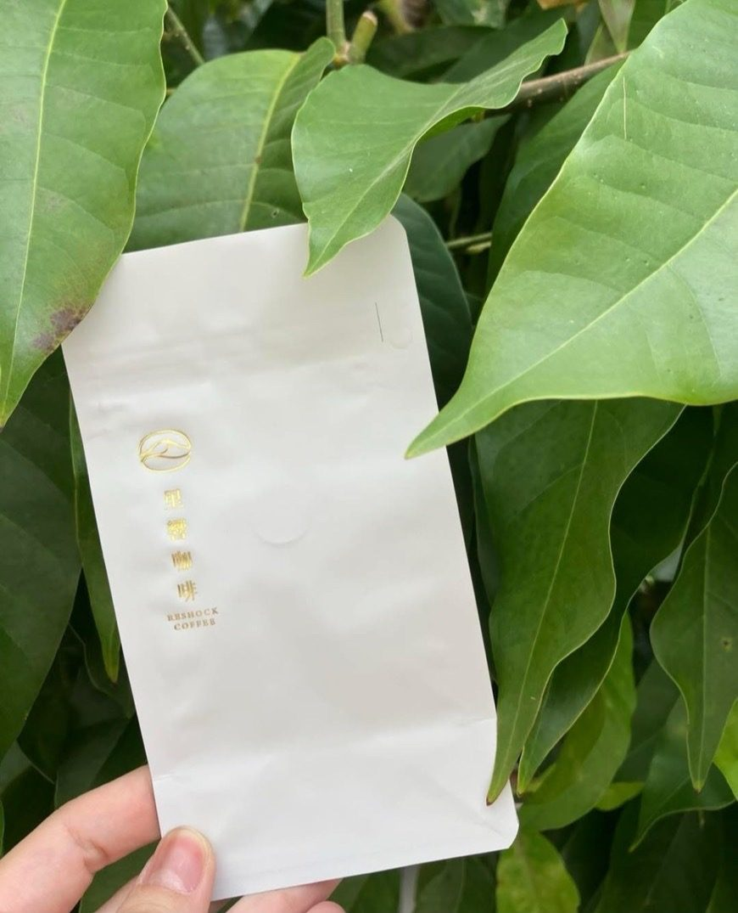
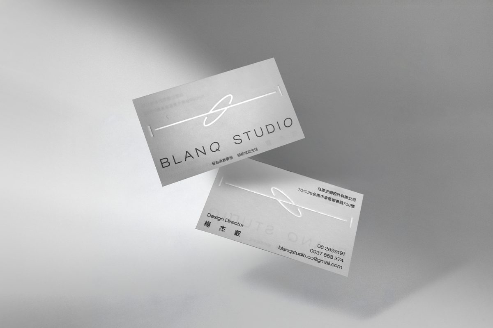

燙金是什麼？和印「金色」差在哪？
很多人以為燙金是「印上金色油墨」，其實完全不同。燙金（Foil Stamping）是把刻好圖案的金屬版加熱，隔著一卷金屬箔往紙上壓——高溫和壓力讓箔的金屬層轉印到紙面，留下的是真正帶金屬反射的圖文。
油墨印出來的「金色」只是模擬，在光下是霧的；燙金則會隨角度閃動，摸起來還有一層薄薄的墊壓手感。設計上想要「會發光」的效果，只有箔做得到。
順帶一提：不放箔、只用熱版直接壓紙，叫做素燙（烙印）——在皮革感或深色美術紙上壓出深色的沉穩印痕，是近年名片與皮件吊牌很受歡迎的低調做法。



燙金的流程：四個步驟
- 開版 — 依你的圖案製作金屬燙版。每一個圖案、每一個位置各需要一塊版；換一個箔色，也是各自一塊版。
- 調機對位 — 把版裝上燙金機，調整溫度、壓力與位置。位置準不準、壓得勻不勻，就是這一步的功夫。
- 逐張熱壓 — 紙張逐張進機台，熱版隔著箔壓上去。喜成使用海德堡菊全開自動輪轉燙金機，大批量也能維持一致的壓力與位置。
- 檢品 — 挑出位置偏移、上箔不全的瑕疵張，才進下一道工序或包裝。
燙金價格怎麼算？看懂「版費＋工繳」
各家工廠報價方式略有差異，但骨架都是兩塊：
① 版費（一次性）
製作燙版的費用，跟隨圖案的面積與色數：圖案越大、箔色越多（每色一塊版），版費越高。這是一次性費用——同一批貨不論數量多寡，版費都是那一筆。
② 工繳（隨數量）
上機燙印的加工費，跟隨數量與道數。一個箔色＝一次上機作業（一道）；正面燙兩色＝兩道。數量越大，平均每張的工繳越低——所以燙金是「量大越划算」的工藝，少量時版費與基本工繳占比高，把數量拉上去，單價會明顯下降。
想知道自己的案子多少錢？喜成有自助報價工具，選紙材、數量、燙金規格即時出價。加官方 LINE 傳一張名片即可免費開通。
箔色怎麼選？不只金色
「燙金」其實是通稱——箔的顏色有金、銀、亮紅、亮藍、亮黑、白、雷射銀等上百種，喜成可依箔號指定，連霧金、古銅金這種細分色都找得到。
- 深色紙 × 金箔：對比最強、最顯貴氣，禮盒與紅包袋的經典組合。
- 淺色紙 × 素燙或黑箔：低調內斂，設計感名片的常見選擇。
- 雷射箔：隨角度變彩虹光，適合年輕品牌與活動主視覺。
什麼紙適合燙金？
大多數紙材都能燙金，但效果有差：表面平整的紙上箔最亮；紋路深的美術紙則會透出紙紋的質感，各有味道。除了紙，鋁袋、皮革感材質等特殊表面喜成也有實際燙印經驗（見上方鋁袋作品）。不確定你的紙能不能燙？寄一張樣紙來，我們直接試給你看。
喜成的燙金設備與能力
| 項目 | 規格 |
|---|---|
| 燙金機 | 海德堡菊全開自動輪轉燙金機 |
| 最大紙張尺寸 | 67 × 90 cm |
| 最大燙金面積 | 64 × 80 cm |
| 紙張厚度範圍 | 50 磅 ～ 500 磅 |
| 箔色 | 百色任選，可指定箔號 |
常見問題
燙金可以燙很細的線條或小字嗎？
可以，但有極限。太細的線條與過小的字，箔轉印時容易糊掉或斷線。設計時建議線條與字級保留足夠粗細，拿不準的話把設計檔傳給我們，上機前先替你檢查。
燙金和打凸可以同時做嗎？
可以，而且是精品包裝的常見組合——燙金給光澤、打凸給立體，兩道工序對位疊加。詳見打凸打凹（壓紋）指南。
量很少也可以燙金嗎？
可以。喜成小量也接，一盒名片也能燙得漂亮。只是版費是一次性費用，數量越少平均攤到每張的成本越高，這點在預算上先有個底。